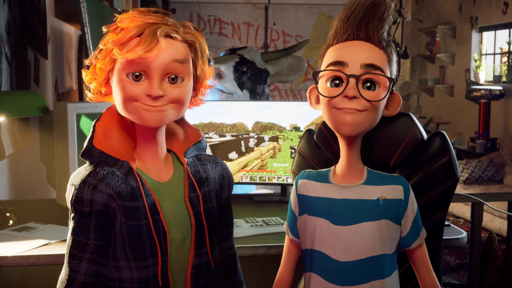

1000 DEATHS
Character creation, rigging, and custom shader effects for the video game 1000 Deaths, developed by Pariah Interactive. Work spanned concepting, high-poly sculpting, retopology, texturing, and implementation of stylized real-time shaders within the game engine.
